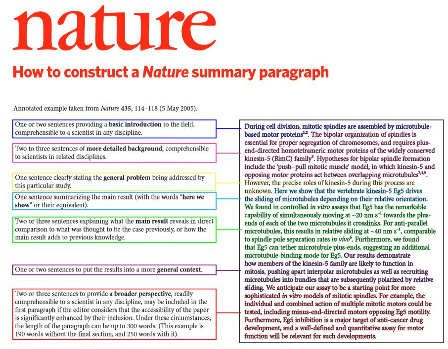

Writing
Writing as part of the research process
Writing is a major part of science. Clearly and accurately communicating your findings to the scientific community and public is central to advancing knowledge on the topic. Beyond this responsibility, writing is an important for refining our ideas. Clear writing can only come from clear thinking. Putting ideas on paper and iterating on those ideas allows us to develop and clarify our ideas over time.
In this lab, you will receive (at time significant) comments and edits on your writing. Do not take this as a personal judgement, but rather a way for us to work through the ideas together. Additionally, students often receive too little feedback on their writing in classes. This is a missed opportunity to grow as a writer. I hope this is something you will gain through your research experience.
Writing workflow
The set of steps outlined below is modified from How to write a scientific paper. While this is a great workflow, it is not the only way to do things and you may find that an alternate approach works better for you as you gain experience with writing scientific papers.
It is also very helpful to do some writing as you are working on your analysis as the process can clarify some of your thinking about your analysis. Since that is not a linear process, you may iterate between the writing steps below and your analysis at various points in the workflow below. If you are working on a literature review or are just reading some papers to take a break from coding, it can also be useful to free write some sentences or paragraphs that you might later incorporate into your paragraphs.
Notice that this workflow includes multiple points for co-authors to provide feedback and input. This allows them to be true collaborators on the project and ensures that they have a genuine opportunity to shape the direction of the paper as it is developed. Otherwise, you might receive feedback that you need to make substantial changes at the end – an outcome that could have been avoided by reaching out sooner!
Mind map - There is no single process for mind mapping, as it is just an approach for organizing your thoughts. This could be a set of notes, a conceptual figure, a set of boxes and arrows, groups of sticky notes, etc. You can conduct this on your own following conversations with your writing team or develop it as part of a structured exercise with the team. The person serving as first author is the primary person for deciding the content of the paper and they must have a clear idea of the content or it won’t be possible to complete the next steps.
Write down your main message - In 25 words or fewer, state the main message of the paper. You may have multiple lines of evidence in your paper, but you should have one main message. If you can’t think of just one, you are either not focusing enough, or you have more than one paper to write.
Write a working abstract - No one read (or cite) the paper if they are not interested by the abstract. It should answer the following, explicitly:
- Why are you doing this? (what is the broad context and motivation)
- What did you do? (a general summary of the methods/approach to convince the reader that the work is rigorous)
- What did you find? (succinct but specific statement(s) of the main results)
- What does this mean and what is it good for? (put the work back in the the broader context and connect it to its application(s))
Some people find the following annotated abstract example from Nature as a helpful guide: 
Write down your title - A good title should lure the casual browser to read further. In most cases, especially for primary data papers, give your main result in your title – hence, a direct link to your main message. No one will bother to read your abstract if your title is boring or lacks relevance. If you cannot decide on a single title, then provide a few options for your collaborators to provide feedback on.
Get feedback from your co-authors - This is an important point to get feedback from your co-authors on your main message, working abstract and proposed title(s). It is often also helpful to include draft figures that support your findings. After their feedback, revise them and send back. Iterate until everyone indicates they are ready to move forward.
Decide on display items - The number of allowed figures depends on the journal, but if a target journal has not been selected yet, set a strict upper limit of 6 display items (any mix of figures and/or tables, multipanel figures are acceptable if they relate to the same theme). It is often useful to aim for one figure per main finding. As you select figures, critically evaluate which best support your main result points. Additional figures can always be included in the supporting information (for most journals, at least). Note that all figures in the main text and SI must be references in the text. Even if you haven’t made the figures yet, it can be helpful to “storyboard” your figure ideas and main messages as this is a visual way to think through the narrative of the paper.
Create the figures and tables - You will likely have developed some draft versions of figures as part of your exploratory and formal analysis for the paper. Now you will need to develop the final figures for the paper and write the legends for each. Ensure that each legend is stand-alone from the main text. While you don’t necessarily have to polish all elements, it should be structurally as final as possible. Note that final touches like sizing, colors, etc. always takes longer than you plan, so try to build in time for final touches to figures in your work plan.
Circulate your display items with legends - This will help your co-authors dig into the results and focus this round of comments on what might be confusing/unexpected, what should be investigated further, and what might be interesting points to highlight. They often have ideas of alternate figures to plot. Revise accordingly and iterate until everyone is happy with selection and presentation.
Draft the outline - A well-developed, detailed outline will improve the quality of your final paper and will make it easier to write. This stage requires careful thinking, so plan on spending up to a full day working on this to ensure it is sound before moving on:
- Decide on length of main text. Word limits depend on the target journal and article type, but it is important to know so that you can backwards plan the length of your sections.
- Work out the relative size of each section. As an example, for a 3000 word manuscript a typical breakdown is 600 (Introduction), 900 (Methods), 500 (Results), 800 (Discussion), 200 (Conclusion). However, the final breakdown varies depending on how much context setting is required, how many lines of evidence you are using, etc.
- For each section, plan the paragraphs. Each paragraph should be about 50 to 250 words, but at this stage, do only this: write out each paragraph’s main message in 15 words or less (similar to the concept of the paper’s main message – remembering that each paragraph should be about only one thing). Then, play around with the arrangement of the paragraphs until you are satisfied with the logical flow.
- If you wish, add to each paragraph some additional notes, key words, indications of reference to cite, display items to refer to, etc. This helps elaborate on the 15-word main message. You can also prompt co-authors to flag relevant references for the paragraphs.
- Circulate the skeleton to co-authors and invite critical feedback. Emphasize that this is the appropriate time to fix problems with flow, ideas/content, thrust towards main message, etc. Iterate the skeleton’s revisions until co-authors are happy (or at least some consensus has been reached). Often you’ll get no feedback except “that’s fine”. No problem – this indicates that you’ve planned well.
Write the paragraphs! You can do this in any order you like because you know your structure and flow are already established. This is a great advantage, because some parts of a paper are inevitably easier to write than others (and getting more and more final text down is a psychological boost). This also punches through writer’s block, and also permits you to work on discrete units of your paper to avoid mental burn-out (don’t try to spend all day writing – take a break with email, a walk, some analysis or coding, etc). DO try to set goals for a day (e.g., 5 paragraphs for a day, with an hour on each). Add the references (using a reference manager) as you go. You can also assign paragraphs for co-authors to draft.
Revise the working abstract into a final draft form - Your thinking may have evolved (and often does!) as you wrote the draft. Consequently, you will likely need to update the working abstract based on the final structure and content of the paper. This now becomes your paper’s abstract.
Circulate the finished draft - Send the draft to your co-authors and give them sufficient time (say 2 weeks) for feedback. You’ll find they’ll be happy to meet this time frame, as they’ve already been embedded in the paper development throughout (even if it’s just to say “great!” at each juncture in which they’re asked for feedback).
Reproducibility of figures and results
It is critical to ensure the entire results of your analysis are reproducible, including any figures, tables, and summary statistics presented in text. It may be tempting to produce statistics for your paper on the fly, but this is a bad idea as someone will inevitably ask you about it and you will have a moment of panic when you try to reproduce the number. Alternatively, during revisions, you might need to update the number but you might forget exactly how you came up with it. To avoid this, it is best practice to produce ALL results and figures with code that accompanies the paper. R Markdown and Quarto are two good R tools for creating results documents with code that can be re-run to automatically update results text and figures. While the entire paper can be written using these tools, it is generally difficult to work with collaborators directly within these platforms. Consequently, some degree of copying and pasting is often inevitable, but this should be minimized and well documented to create as small of a reproducibility barrier as possible. For example, one might create a results.Rmd file that generates in text statistics and when rendered, returns full sentences with the statistics embedded (e.g., “Imports increased from 1050 to 2034t from 1996 to 2020”, where the volumes and possibly years are calculated within the script).
Note that journals will often require you to upload separate figure files with specific dimensions, resolution, file formats, etc. To make this easier, you will likely want your script to write out your figure files once they are finalized, rather than pasting them into a doc and resizing or rearranging them there. Resizing figures for journal specifications can take quite a bit of tinkering, so be sure to build in quite a bit of time to complete this.
Upon publication, the code and data required to reproduce all findings in the paper must be archived. The associated citable DOI should be included in the paper (likely in the data/code availability statement(s)). See the section on Archiving for more.
References
Scientific papers must be well referenced to provide supportive evidence for claims and to connect your work to the existing literature. In order to make sure all references are included and formatted consistently, it is best practice to use a reference manager (e.g., Zotero, EndNote) while you are writing a paper. While it can take some time to learn a new tool, it will save you time in the end, particularly if you need to switch reference formats when resubmitting a paper. Most platforms your write in will have a plugin for the popular reference managers, but note that there might be issues converting among formats. For example, if you are working in Google docs and then download your document and start working in Microsoft Word, the reference links might be broken. Note that you can often import reference information into reference managers using a DOI.
To ensure that data creators and code developers are properly credited, it is important to make sure these are fully referenced. The R grateful package is a helpful tool to cite all packages and version used in a project.
Additional writing tips
To help with your writing, here are a few tips based on some of my most common comments:
- Supportive evidence should consist of specific findings and examples drawn. The key here is to “show” rather than “tell” the reader. For example, rather than saying “Researchers have found aquaculture to be important to seafood supplies (Smith et al. 2022),” say something like “Aquaculture supplies half of all seafood globally (Smith et al. 2022).”
- Avoid using direct quotes. It is unlikely that the way the original author phrased a point is the best way to make that point within your paper. Thinking about the main point and rephrasing it to fit within your argument will likely improve the flow.
- Use figures and tables as supporting evidence, but do not just walk through the figures and tables. Do not say “Figure 1 shows X is true” or “As shown in Figure 1, X is true.” Instead say “X is true (Figure 1).” A good test is to look for any instances where you refer to a figure or table outside of parentheses.
- Be concise and direct. Every time you read your writing try to cut out words.
- Use first person and active language. This means rather than saying “The data was collected by…” you should say “We collected the data by…”
As you work on your writing, know that most people find it difficult and feeling frustrated is common. If you are feeling stuck, try taking a step back and re-mapping your core argument. Sometimes the best thing is just to start putting words on the paper, knowing that it won’t be any good the first pass.
Additionally, here are a few resources you can review for more information:
Ten Simple (Empirical) Rules for Writing Science
Simple rules for concise scientific writing
Writing Science: How to Write Papers That Get Cited and Proposals That Get Funded - Jessica also has a copy to borrow.